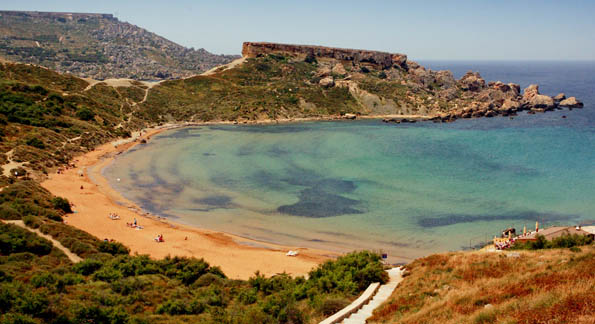

Playas de Malta
Golden Bay
Esta es sin duda una de las playas de arena más populares de toda la isla de Malta, no sólo por su extensión sino también porque está totalmente equipada para los turistas. Perfecta para aquellos que les gusta caminar, ya que a tan solo 5 minutos se encuentra la playa de Ghajn Tuffieha Bay.

Ghajn Tuffieha Bay
Esta hermosa playa es también de arena y es idónea para aquellas personas a las que les gusta la tranquilidad. Suele ser un sitio muy tranquilo y tiene una preciosa superficie sobre la que disfrutarás de fantásticos paseos.

Ghadira Bay
Esta es una playa de grandes dimensiones que se encuentra al lado de Mellieha. Podrás alquilar sombrillas y tumbonas para tumbarte bajo el sol y seguramente disfrutarás de una tarde fabulosa.